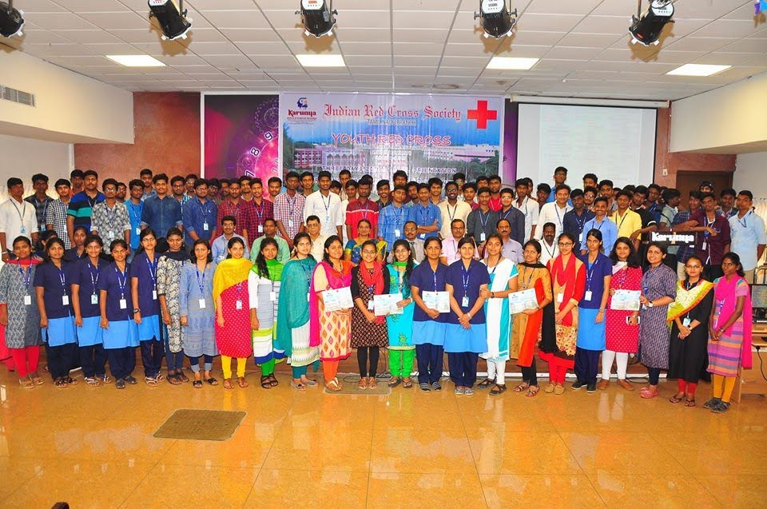

True to its name Karunya which means 'Compassion' shall be an institution with social concern to address the problems of humanity through technical education, research and development, products, patents and extensionTrue to its name Karunya which means 'Compassion' shall be an institution with social concern to address the problems of humanity through technical education, research and development, products, patents and extensionTrue to its name Karunya which means 'Compassion' shall be an institution with social concern to address the problems of humanity through technical education, research and development, products, patents and extensionTrue to its name Karunya which means 'Compassion' shall be an institution with social concern to address the problems of humanity through technical education, research and development, products, patents and extension